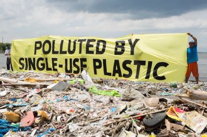

POLLUTION IN THE PHILIPPINES
Pollution is one of the known problem in the Philippines. People used to abuse the environment and being ignorant on everything. Pollutants are the name given to these dangerous substances. Pollutants can be both natural and man-made, such as volcanic ash. They can also be caused by human activities, such as factory runoff or waste. Pollutants have a negative impact on the quality of the air, water, and land.Many items that are helpful to people pollute the environment. Pollutants are emitted by automobile exhaust pipes. The use of coal to generate power pollutes the environment. Garbage and sewage from industries and residences contaminate the land and water. Pesticides, which are chemical poisons used to eliminate weeds and insects, contaminate streams and endanger animals. The cause of pollution includes, deforestation, improper waste management, burning of fossil fuels,exhaust fumes from your vehicle, and mismanagement of landfill waste caused by garbage pollution. All of these can destroy the environment easily. Not just the environment may harm but also us people, these causes may lead us to bad health condition.

Sooner or later, we will have to recognise that the Earth has rights, too, to live without pollution. What mankind must know is that human beings cannot live without Mother Earth, but the planet can live without humans.
- Evo Morales